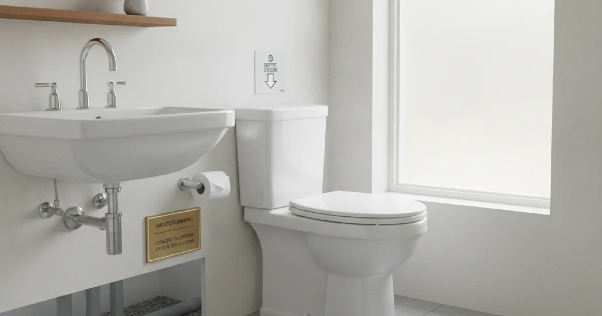

Septic Tank Service in Armonk, NY
Slow drains or backups in a septic-connected home usually start as a plumbing issue. We diagnose and repair the plumbing side clearly, and tell you honestly if it's really a job for a septic pumping company instead.
- Licensed & Insured
- Upfront Pricing
- Same-Day Service Available
- Locally Owned & Operated

Signs you need it
In a septic-connected home, keep an eye out for:
- Drains that empty slowly throughout the whole house, not just one sink or tub
- Gurgling sounds from toilets or drains after you run water
- Sewage odors indoors, especially near floor drains or the lowest fixtures in the house
- Water backing up into a shower, tub, or floor drain when you run the washing machine or flush
- A soggy, unusually green patch of lawn near where the tank or leach field sits
Any of these is worth a call, even if you're not sure whether it's a plumbing problem or something with the tank itself.
Common causes
On the plumbing side, we most often find a blocked or partially collapsed drain line between the house and the tank, a vent stack issue causing gurgling, or a buildup of grease and solids narrowing the pipe. Flushing wipes, excess grease, or harsh chemical drain cleaners over time can all contribute.
Sometimes what looks like a plumbing problem is actually a full or failing septic tank — that's a different issue, and one that needs a dedicated septic company, not a plumber.
Before you call
If you're seeing a backup, stop running water and hold off on laundry or dishwasher cycles until it's looked at — adding more water can push a backup further into the house. Avoid using drain cleaning chemicals, since they can complicate diagnosis and aren't a real fix for a blocked line or a full tank.
If you know roughly when your tank was last pumped, that's useful information to have ready when you call, since it helps us figure out whether this looks like a plumbing issue or a tank issue.
Our process
We ask what you're noticing and where, then inspect the household plumbing and the line running out to the tank. If we find a blockage, vent issue, or damaged line on the plumbing side, we diagnose it clearly, give you upfront pricing, and make the repair.
If what we find points to the tank itself — it's full, damaged, or the leach field is failing — we'll tell you directly and explain what kind of company handles that next step. We don't take on tank pumping or septic system work ourselves, and we'd rather be upfront about that than stretch beyond what we're equipped for.
While we're there, if a simple slow drain elsewhere in the house is part of what's going on, we can also help with getting a sluggish drain moving again.
When to call which pro
Call us for slow drains, gurgling, backups into fixtures, or odors that point to a plumbing-side issue between your house and the tank. We'll diagnose it honestly.
Call a dedicated septic pumping company instead if the tank hasn't been pumped in years, the yard near the tank is consistently soggy or smells, or we tell you after inspection that the issue is the tank or leach field itself rather than your household plumbing. For a home inspector's perspective on how septic systems get evaluated, InterNACHI publishes home inspector guidance on septic systems worth a look.
For the bigger picture of what we cover for septic-connected homes, see our septic services overview, or the full scope of plumbing work we handle for everything else.
Frequently asked questions
Do you pump septic tanks?
No, septic tank pumping isn't something we do — that work belongs to a dedicated septic company. What we handle is the plumbing between your house and the tank, and if an inspection points to a tank problem, we'll tell you and steer you toward someone who pumps tanks for a living.
How can I tell if it's a plumbing problem or a full septic tank?
A single slow fixture usually points to plumbing. Whole-house slow drains, gurgling everywhere, or a soggy area near the tank often point to the tank itself. We can help you tell the difference on a visit.
Is it safe to use drain cleaning chemicals in a septic-connected home?
We generally don't recommend it. Harsh chemicals can disrupt the natural bacteria balance in a septic tank and don't fix an underlying blockage or full tank.
What's causing gurgling sounds in my drains?
Gurgling often means air is trapped in the line, which can point to a partial blockage or a venting issue between your house and the tank.
Can you tell me when my septic tank needs pumping?
We're not a septic pumping company, so we won't give you a pumping schedule. If our inspection suggests the tank needs attention, we'll tell you and point you to a company that handles that directly.
Do you serve septic-connected homes outside Armonk?
Yes, we handle this across our full service area, including Pleasantville, Mount Kisco, Bedford, Scarsdale, and Greenwich.